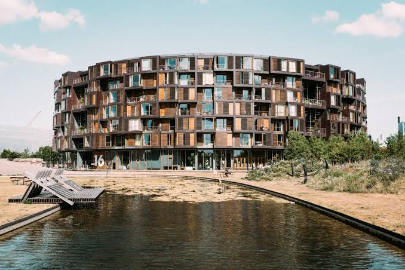
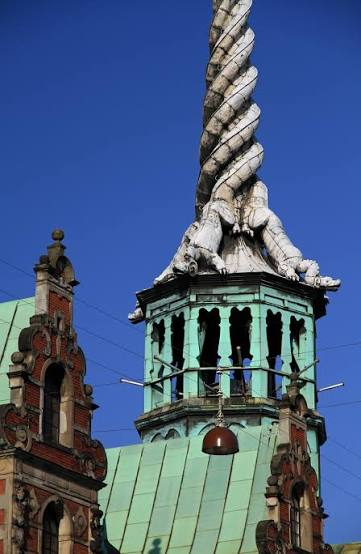
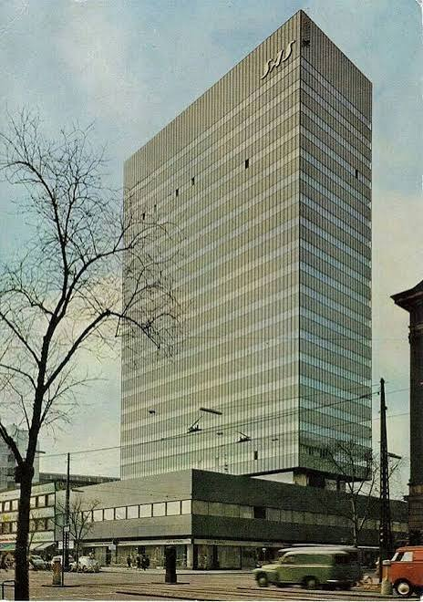

CityLoop Quest Copenhague


La brique est le fil le plus solide de l’architecture copenhaguoise. Elle apparaît dans les églises médiévales, les palais de Christian IV, les immeubles ouvriers et les chefs-d’œuvre modernes de Jensen-Klint. Sa couleur change selon la cuisson, le joint et la lumière maritime. À Grundtvigs Kirke, des millions de briques jaunes produisent une monumentalité presque abstraite ; à l’Hôtel de Ville, la brique rouge dialogue avec pierre, cuivre et ferronnerie.
Le règne de Christian IV apporte un vocabulaire Renaissance reconnaissable : pignons découpés, grès clair sur fond rouge, tours et flèches. Rosenborg et la Bourse en sont les exemples les plus théâtraux. Le XVIIIe siècle préfère ensuite le rococo d’Eigtved à Amalienborg et dans Frederiksstaden, quartier ordonné par des axes et des façades aristocratiques qui contrastent avec les ruelles anciennes.

Après les incendies de 1795 et le bombardement de 1807, C. F. Hansen impose un classicisme sévère. La cathédrale Notre-Dame, le palais de justice et plusieurs maisons utilisent des volumes clairs, des colonnes et une décoration mesurée. Au XIXe siècle, le national-romantisme cherche une expression plus locale, visible chez Martin Nyrop ou dans les détails artisanaux de l’Hôtel de Ville.
Le modernisme danois du XXe siècle ne se réduit pas au blanc. Arne Jacobsen travaille l’orientation, le mobilier et les détails à Bellavista ou au SAS Royal Hotel. Jørn Utzon, Henning Larsen et les architectes plus récents poursuivent cette attention à l’usage. La Bibliothèque royale, l’Opéra, BLOX et les logements du port montrent cependant que chaque projet contemporain déclenche des débats sur la hauteur, la silhouette et l’accès à l’eau.

Pour lire un bâtiment, regardez d’abord son rapport à la rue : entrée, socle, cour et rez-de-chaussée. Puis observez les matériaux vieillissants — cuivre devenu vert, brique réparée, bois exposé au vent. Copenhague réussit lorsqu’elle relie architecture et vie quotidienne : bancs, vélos, seuils et quais comptent autant que les façades célèbres.